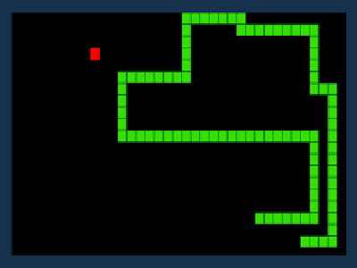
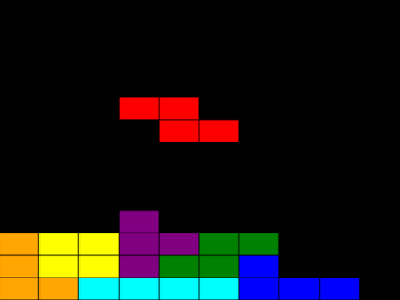
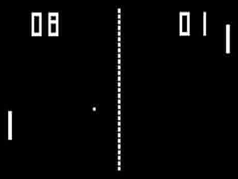

Snake is a video game genre where the player maneuvers a growing line that becomes a primary obstacle to itself. The concept originated in the 1976 two-player arcade game Blockade from Gremlin Industries, and the ease of implementation has led to hundreds of versions (some of which have the word snake or worm in the title) for many platforms. The player controls a dot, square, or object on a bordered plane. As it moves forward, it leaves a trail behind, resembling a moving snake. In some games, the end of the trail is in a fixed position, so the snake continually gets longer as it moves. In another common scheme, the snake has a specific length, so there is a moving tail a fixed number of units away from the head. The player loses when the snake runs into the screen border, other obstacle, or itself.

Tetris, video game created by Russian designer Alexey Pajitnov in 1985 that allows players to rotate falling blocks strategically to clear levels. Pajitnov claimed he created the name of the game by combining the Greek prefix tetra, which refers to the four squares contained in each block, with the word tennis.
Tetris has been released for virtually every computer and electronic gaming system, and it is often revered as a classic. Though numerous sequels have been spawned, Tetris games almost always have the same play mechanics: differently shaped blocks drop at varying speeds, and, as the blocks descend, the player must rotate and arrange them to create an uninterrupted horizontal row on the screen. When the player forms one or more solid rows, the completed rows disappear. The goal of the game is to prevent the blocks from stacking up to the top of the screen for as long as possible.

Pong, groundbreaking electronic game released in 1972 by the American game manufacturer Atari, Inc. One of the earliest video games, Pong became wildly popular and helped launch the video game industry. The original Pong consisted of two paddles that players used to volley a small ball back and forth across a screen.